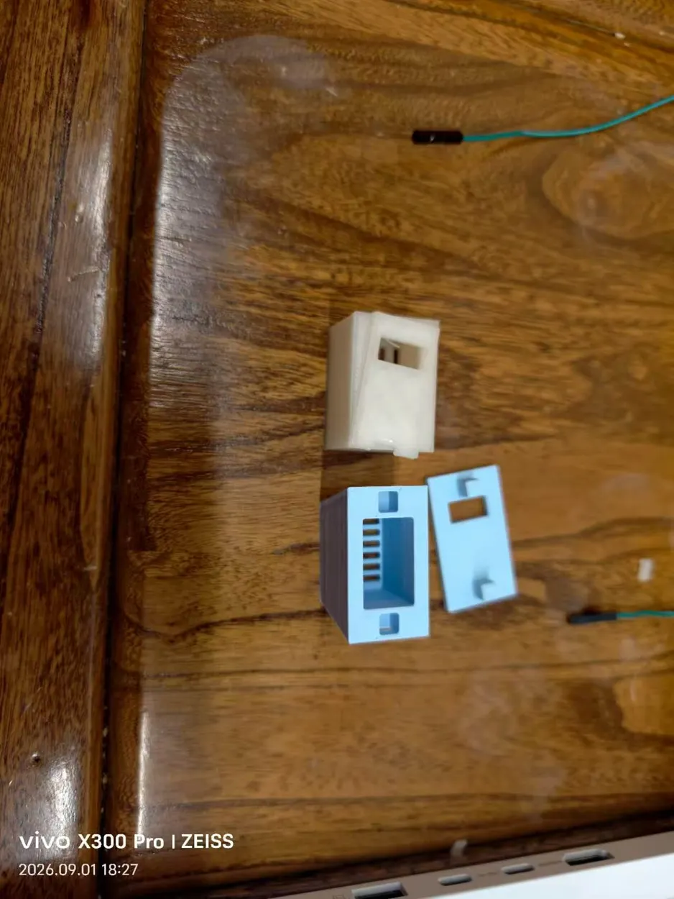
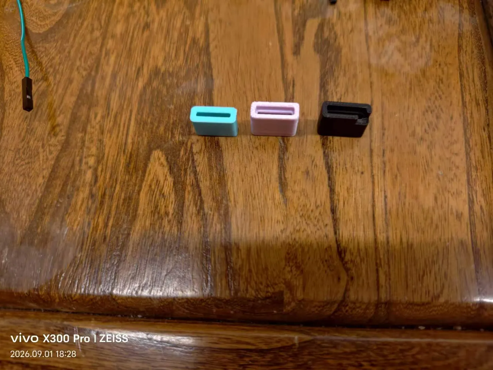
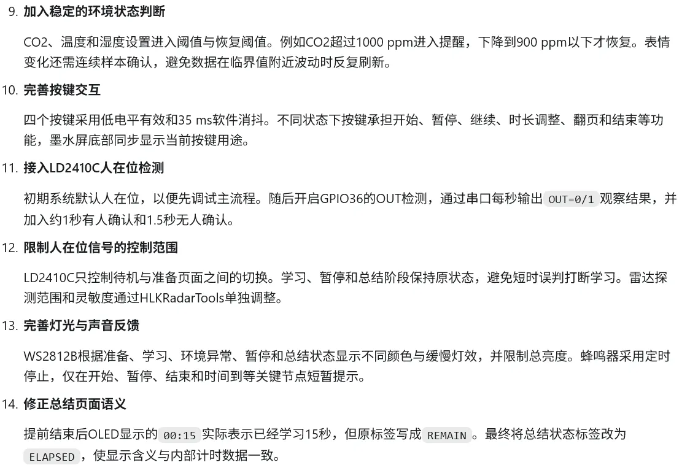
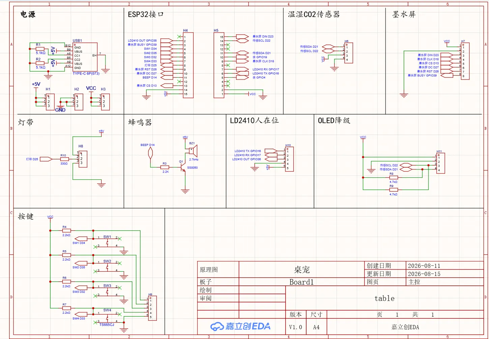
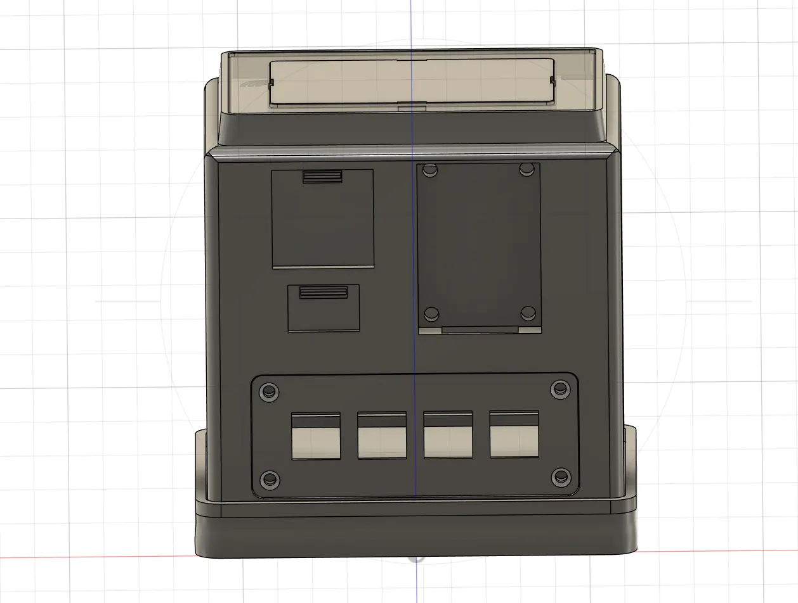
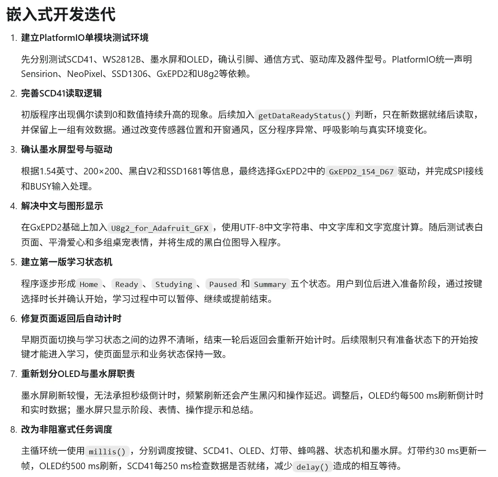

返回硬件项目索引
返回硬件项目索引寝室智能桌宠
阅读项目文档 ↓这是一款简易的寝室智能桌宠，面向专注学习场景，通过学习计时、环境检测和低打扰反馈，帮助学生及时关注空气状态与休息节奏。
系统以ESP32为主控，使用SCD41检测CO2、温度和湿度，使用LD2410C毫米波雷达判断用户是否位于桌前。用户到位后，设备进入准备页面，可以通过机械按键选择学习时长，再确认开始。学习过程中，OLED显示倒计时和实时环境数据，墨水屏显示当前阶段、桌宠表情和按键功能，WS2812B灯带使用低亮度颜色表达环境与学习状态。学习结束后，设备进入总结页面，显示本轮学习时长、CO2平均值与峰值、平均温湿度，并给出简短反馈。








项目文档
项目介绍
项目介绍
项目概况
项目名称：寝室智能桌宠
Mentor：巩子杰
项目简介
寝室智能桌宠是一款面向专注学习场景，通过学习计时、环境检测和低打扰反馈，帮助学生及时关注空气状态与休息节奏的学习伴侣。
系统以ESP32为主控，使用SCD41检测CO2、温度和湿度，使用LD2410C毫米波雷达判断用户是否位于桌前。用户到位后，设备进入准备页面，可以通过机械按键选择25、45、60或90分钟的学习时长，再确认开始。学习过程中，OLED显示倒计时和实时环境数据，墨水屏显示当前阶段、桌宠表情和按键功能，WS2812B灯带使用低亮度颜色表达环境与学习状态。学习结束后，设备进入总结页面，显示本轮学习时长、CO2平均值与峰值、平均温湿度，并给出简短反馈。
项目成长
嵌入式代码（体量有点大因为代码框架是AI写的，正在增加功能以及优化中...）
C++
include <Arduino.h>
include <Adafruit_NeoPixel.h>
include <Adafruit_SSD1306.h>
include <esp_arduino_version.h>
include <GxEPD2_BW.h>
include <SPI.h>
include <SensirionI2cScd4x.h>
include <U8g2_for_Adafruit_GFX.h>
include <Wire.h>
include <cstring>
include "epaper_ui_font.h"
include "expression_bitmaps.h"
namespace {
// -----------------------------------------------------------------------------
// Hardware map from the custom carrier PCB.
// -----------------------------------------------------------------------------
constexpr uint8_t PIN_I2C_SDA = 21;
constexpr uint8_t PIN_I2C_SCL = 22;
constexpr uint8_t OLED_ADDRESS = 0x3C;
constexpr int8_t OLED_RESET = -1;
constexpr uint8_t OLED_WIDTH = 128;
constexpr uint8_t OLED_HEIGHT = 64;
constexpr uint8_t PIN_EPD_SCK = 18;
constexpr uint8_t PIN_EPD_MOSI = 23;
constexpr uint8_t PIN_EPD_CS = 13;
constexpr uint8_t PIN_EPD_DC = 27;
constexpr uint8_t PIN_EPD_RST = 26;
constexpr uint8_t PIN_EPD_BUSY = 39;
constexpr uint8_t PIN_LED_STRIP = 25;
constexpr uint8_t PIN_BUZZER = 14;
constexpr uint8_t PIN_BUTTON_START = 34;
constexpr uint8_t PIN_BUTTON_PAGE = 35;
constexpr uint8_t PIN_BUTTON_FINISH = 32;
constexpr uint8_t PIN_BUTTON_DURATION = 33;
constexpr uint8_t PIN_LD2410_OUT = 36;
constexpr uint8_t PIN_LD2410_RX = 16; // ESP32 RX, connected to LD2410 TX.
constexpr uint8_t PIN_LD2410_TX = 17; // ESP32 TX, connected to LD2410 RX.
// -----------------------------------------------------------------------------
// User-tunable settings.
// Set LED_COUNT to the number of WS2812B pixels actually connected.
// -----------------------------------------------------------------------------
constexpr uint16_t LED_COUNT = 8;
// Global WS2812B brightness limit. 72/255 is visible through a diffuser while
// keeping an eight-pixel strip comfortably within USB power capability.
constexpr uint8_t LED_MASTER_BRIGHTNESS = 72;
constexpr bool PRESENCE_ACTIVE_LEVEL = HIGH;
constexpr bool ENABLE_PRESENCE_DETECTION = true;
constexpr bool BUZZER_IS_PASSIVE = true;
constexpr bool ENABLE_LD2410_UART_DIAGNOSTICS = false;
constexpr uint32_t BUTTON_DEBOUNCE_MS = 35;
// Poll data-ready frequently; the SCD41 itself produces a new sample about
// every five seconds in normal periodic measurement mode.
constexpr uint32_t SENSOR_POLL_MS = 250;
constexpr uint32_t LED_FRAME_MS = 30;
constexpr uint32_t OLED_REFRESH_MS = 500;
constexpr uint32_t SCREEN_REFRESH_MIN_MS = 45000;
// Short confirmation times make the LD2410 OUT signal easy to verify. Increase
// PERSON_ABSENT_DELAY_MS to 30-60 seconds after the placement is finalized.
constexpr uint32_t PERSON_PRESENT_CONFIRM_MS = 1000;
constexpr uint32_t PERSON_ABSENT_DELAY_MS = 1500;
constexpr uint32_t PRESENCE_DEBUG_LOG_MS = 1000;
// The SCD41 produces a fresh reading about every five seconds. Requiring two
// matching readings keeps brief spikes from causing an e-paper refresh.
constexpr uint8_t EXPRESSION_CONFIRMATION_SAMPLES = 2;
constexpr uint32_t EXPRESSION_CONFIRMATION_MAX_MS = 12000;
constexpr uint32_t LONG_SITTING_INTERVAL_MS = 45UL * 60UL * 1000UL;
constexpr uint32_t LONG_SITTING_DISPLAY_MS = 3UL * 60UL * 1000UL;
constexpr uint16_t CO2_WARNING_PPM = 1000;
constexpr uint16_t CO2_WARNING_CLEAR_PPM = 900;
constexpr uint16_t CO2_HIGH_PPM = 1500;
constexpr uint16_t CO2_HIGH_CLEAR_PPM = 1400;
constexpr float TEMPERATURE_HIGH_C = 28.0F;
constexpr float TEMPERATURE_HIGH_CLEAR_C = 27.0F;
constexpr float TEMPERATURE_LOW_C = 18.0F;
constexpr float TEMPERATURE_LOW_CLEAR_C = 19.0F;
constexpr float HUMIDITY_LOW_RH = 30.0F;
constexpr float HUMIDITY_LOW_CLEAR_RH = 35.0F;
constexpr float HUMIDITY_HIGH_RH = 70.0F;
constexpr float HUMIDITY_HIGH_CLEAR_RH = 65.0F;
constexpr uint8_t BUZZER_LEDC_CHANNEL = 0;
constexpr uint16_t BUZZER_FREQUENCY_HZ = 2700;
constexpr uint16_t STUDY_DURATIONS_MINUTES[] = {25, 45, 60, 90};
constexpr uint8_t STUDY_DURATION_COUNT =
sizeof(STUDY_DURATIONS_MINUTES) / sizeof(STUDY_DURATIONS_MINUTES[0]);
constexpr uint8_t DEFAULT_DURATION_INDEX = 2; // 60 minutes.
enum class PetMode : uint8_t {
Home,
Ready,
Studying,
Paused,
Summary,
};
enum class ScreenRefreshMode : uint8_t {
None,
BodyFast,
FullScreenFast,
Full,
};
struct EnvironmentData {
bool valid = false;
uint16_t co2Ppm = 0;
float temperatureC = 0.0F;
float humidityRh = 0.0F;
uint32_t updatedAt = 0;
};
class DebouncedButton {
public:
explicit DebouncedButton(uint8_t pin) : pin_(pin) {}
void begin() {
// GPIO34 and GPIO35 are input-only and have external pull-ups on the PCB.
pinMode(pin_, INPUT);
rawState_ = digitalRead(pin_);
stableState_ = rawState_;
}
bool wasPressed(uint32_t now) {
const bool reading = digitalRead(pin_);
if (reading != rawState_) {
rawState_ = reading;
changedAt_ = now;
}
if ((now - changedAt_) < BUTTON_DEBOUNCE_MS
stableState_ == rawState_) {
return false;
}
stableState_ = rawState_;
return stableState_ == LOW;
}
private:
uint8_t pin_;
bool rawState_ = HIGH;
bool stableState_ = HIGH;
uint32_t changedAt_ = 0;
};
GxEPD2_BW<GxEPD2_154_D67, GxEPD2_154_D67::HEIGHT> display(
GxEPD2_154_D67(PIN_EPD_CS, PIN_EPD_DC, PIN_EPD_RST, PIN_EPD_BUSY));
U8G2_FOR_ADAFRUIT_GFX chineseText;
const uint8_t* const CHINESE_FONT = u8g2_font_wqy14_t_gb2312b;
Adafruit_SSD1306 oled(OLED_WIDTH, OLED_HEIGHT, &Wire, OLED_RESET);
U8G2_FOR_ADAFRUIT_GFX oledText;
SensirionI2cScd4x scd41;
HardwareSerial radarSerial(2);
Adafruit_NeoPixel ledStrip(LED_COUNT, PIN_LED_STRIP, NEO_GRB + NEO_KHZ800);
DebouncedButton startButton(PIN_BUTTON_START);
DebouncedButton pageButton(PIN_BUTTON_PAGE);
DebouncedButton finishButton(PIN_BUTTON_FINISH);
DebouncedButton durationButton(PIN_BUTTON_DURATION);
PetMode petMode = ENABLE_PRESENCE_DETECTION ? PetMode::Home : PetMode::Ready;
EnvironmentData environment;
petgfx::ExpressionBitmapId activeExpression =
ENABLE_PRESENCE_DETECTION ? petgfx::ExpressionBitmapId::Waiting
: petgfx::ExpressionBitmapId::Ready;
petgfx::ExpressionBitmapId pendingExpression = activeExpression;
PetMode expressionMode = petMode;
bool scd41Available = false;
bool oledAvailable = false;
bool oledDirty = true;
bool personPresent = !ENABLE_PRESENCE_DETECTION;
bool detailPage = false;
bool screenDirty = true;
bool screenRefreshUrgent = false;
ScreenRefreshMode pendingScreenRefresh = ScreenRefreshMode::Full;
uint8_t durationIndex = DEFAULT_DURATION_INDEX;
uint32_t presenceDetectedSince = 0;
uint32_t presenceMissingSince = 0;
uint32_t lastPresenceDebugAt = 0;
uint32_t lastSensorPollAt = 0;
uint32_t lastLedFrameAt = 0;
uint32_t lastOledRefreshAt = 0;
uint32_t lastScreenRefreshAt = 0;
uint32_t buzzerStopAt = 0;
uint32_t pendingExpressionSince = 0;
uint32_t lastExpressionSampleAt = 0;
uint8_t pendingExpressionSamples = 0;
uint32_t studyStartedAt = 0;
uint32_t studyPausedElapsedMs = 0;
uint32_t summaryElapsedMs = 0;
uint16_t sessionStartCo2 = 0;
uint16_t sessionEndCo2 = 0;
uint32_t sessionCo2Sum = 0;
uint16_t sessionMaxCo2 = 0;
uint32_t sessionSampleCount = 0;
float sessionTemperatureSum = 0.0F;
float sessionHumiditySum = 0.0F;
float sessionEndTemperatureC = 0.0F;
float sessionEndHumidityRh = 0.0F;
bool summaryCompleted = false;
void requestScreenRefresh(bool urgent = true) {
screenDirty = true;
screenRefreshUrgent = screenRefreshUrgent · · urgent;
if (pendingScreenRefresh != ScreenRefreshMode::Full) {
pendingScreenRefresh = ScreenRefreshMode::FullScreenFast;
}
oledDirty = true;
}
void requestExpressionRefresh() {
// A queued full-screen update always wins. Otherwise update only the
// expression body with the panel's differential fast-refresh waveform.
if (!screenDirty · · pendingScreenRefresh == ScreenRefreshMode::None) {
pendingScreenRefresh = ScreenRefreshMode::BodyFast;
}
screenDirty = true;
screenRefreshUrgent = true;
oledDirty = true;
}
void requestOledRefresh() {
oledDirty = true;
}
uint16_t selectedDurationMinutes() {
return STUDY_DURATIONS_MINUTES[durationIndex];
}
uint32_t activeStudyElapsedMs(uint32_t now) {
if (petMode == PetMode::Studying) {
return studyPausedElapsedMs + (now - studyStartedAt);
}
return studyPausedElapsedMs;
}
uint32_t selectedDurationMs() {
return static_cast<uint32_t>(selectedDurationMinutes()) * 60UL * 1000UL;
}
void resetSessionStatistics() {
sessionCo2Sum = 0;
sessionMaxCo2 = 0;
sessionSampleCount = 0;
sessionTemperatureSum = 0.0F;
sessionHumiditySum = 0.0F;
sessionEndTemperatureC = 0.0F;
sessionEndHumidityRh = 0.0F;
}
void recordSessionSample(uint16_t co2, float temperature, float humidity) {
sessionCo2Sum += co2;
sessionTemperatureSum += temperature;
sessionHumiditySum += humidity;
++sessionSampleCount;
if (co2 > sessionMaxCo2) {
sessionMaxCo2 = co2;
}
}
uint16_t sessionAverageCo2() {
if (sessionSampleCount > 0) {
return static_cast<uint16_t>(
(sessionCo2Sum + sessionSampleCount / 2) / sessionSampleCount);
}
return sessionEndCo2 != 0 ? sessionEndCo2 : sessionStartCo2;
}
uint16_t sessionPeakCo2() {
if (sessionMaxCo2 != 0) {
return sessionMaxCo2;
}
return sessionStartCo2 > sessionEndCo2 ? sessionStartCo2 : sessionEndCo2;
}
float sessionAverageTemperature() {
return sessionSampleCount > 0
? sessionTemperatureSum / static_cast<float>(sessionSampleCount)
: sessionEndTemperatureC;
}
float sessionAverageHumidity() {
return sessionSampleCount > 0
? sessionHumiditySum / static_cast<float>(sessionSampleCount)
: sessionEndHumidityRh;
}
uint32_t studyRemainingMs(uint32_t now) {
const uint32_t elapsed = activeStudyElapsedMs(now);
const uint32_t duration = selectedDurationMs();
return elapsed >= duration ? 0 : duration - elapsed;
}
petgfx::ExpressionBitmapId expressionForCurrentState(uint32_t now) {
using petgfx::ExpressionBitmapId;
switch (petMode) {
case PetMode::Home:
return ExpressionBitmapId::Waiting;
case PetMode::Ready:
return ExpressionBitmapId::Ready;
case PetMode::Paused:
return ExpressionBitmapId::Paused;
case PetMode::Summary:
return summaryCompleted ? ExpressionBitmapId::Completed
: ExpressionBitmapId::Paused;
case PetMode::Studying:
break;
}
if (!environment.valid) {
return ExpressionBitmapId::FocusGood;
}
const bool co2High =
environment.co2Ppm >= CO2_HIGH_PPM
(activeExpression == ExpressionBitmapId::Co2High &&
environment.co2Ppm >= CO2_HIGH_CLEAR_PPM);
const bool co2Warning =
environment.co2Ppm >= CO2_WARNING_PPM
((activeExpression == ExpressionBitmapId::Co2Warning
activeExpression == ExpressionBitmapId::Co2High) &&
environment.co2Ppm >= CO2_WARNING_CLEAR_PPM);
const bool tooHot =
environment.temperatureC >= TEMPERATURE_HIGH_C
(activeExpression == ExpressionBitmapId::TooHot &&
environment.temperatureC >= TEMPERATURE_HIGH_CLEAR_C);
const bool tooCold =
environment.temperatureC <= TEMPERATURE_LOW_C
(activeExpression == ExpressionBitmapId::TooCold &&
environment.temperatureC <= TEMPERATURE_LOW_CLEAR_C);
const bool tooDry =
environment.humidityRh <= HUMIDITY_LOW_RH
(activeExpression == ExpressionBitmapId::TooDry &&
environment.humidityRh <= HUMIDITY_LOW_CLEAR_RH);
const bool tooHumid =
environment.humidityRh >= HUMIDITY_HIGH_RH
(activeExpression == ExpressionBitmapId::TooHumid &&
environment.humidityRh >= HUMIDITY_HIGH_CLEAR_RH);
if (co2High) {
return ExpressionBitmapId::Co2High;
}
if (tooHot) {
return ExpressionBitmapId::TooHot;
}
if (tooCold) {
return ExpressionBitmapId::TooCold;
}
if (co2Warning) {
return ExpressionBitmapId::Co2Warning;
}
if (tooDry) {
return ExpressionBitmapId::TooDry;
}
if (tooHumid) {
return ExpressionBitmapId::TooHumid;
}
const uint32_t elapsed = activeStudyElapsedMs(now);
if (elapsed >= LONG_SITTING_INTERVAL_MS &&
(elapsed % LONG_SITTING_INTERVAL_MS) < LONG_SITTING_DISPLAY_MS) {
return ExpressionBitmapId::Stretch;
}
return ExpressionBitmapId::FocusGood;
}
void updateExpression(uint32_t now) {
const petgfx::ExpressionBitmapId desired = expressionForCurrentState(now);
if (petMode != expressionMode) {
expressionMode = petMode;
activeExpression = desired;
pendingExpression = desired;
pendingExpressionSince = now;
pendingExpressionSamples = 0;
lastExpressionSampleAt = environment.updatedAt;
requestScreenRefresh();
return;
}
// Outside a study session, state changes such as pause and summary should
// appear immediately and do not need sensor confirmation.
if (petMode != PetMode::Studying) {
if (desired != activeExpression) {
activeExpression = desired;
pendingExpression = desired;
pendingExpressionSamples = 0;
requestScreenRefresh();
}
return;
}
// Evaluate an environmental expression only once per fresh SCD41 sample.
// This makes the delay predictable instead of counting repeated loop calls
// against the same measurement.
if (environment.valid && environment.updatedAt == lastExpressionSampleAt) {
return;
}
if (environment.valid) {
lastExpressionSampleAt = environment.updatedAt;
}
if (desired == activeExpression) {
pendingExpression = desired;
pendingExpressionSince = now;
pendingExpressionSamples = 0;
return;
}
if (desired != pendingExpression) {
pendingExpression = desired;
pendingExpressionSince = now;
pendingExpressionSamples = 1;
Serial.printf("E-paper expression candidate %u (1/%u).n",
static_cast<unsigned>(pendingExpression),
static_cast<unsigned>(EXPRESSION_CONFIRMATION_SAMPLES));
return;
}
if (pendingExpressionSamples < EXPRESSION_CONFIRMATION_SAMPLES) {
++pendingExpressionSamples;
}
if (pendingExpressionSamples >= EXPRESSION_CONFIRMATION_SAMPLES
(now - pendingExpressionSince) >= EXPRESSION_CONFIRMATION_MAX_MS) {
activeExpression = desired;
pendingExpression = desired;
pendingExpressionSince = now;
pendingExpressionSamples = 0;
if (!detailPage) {
requestExpressionRefresh();
}
Serial.printf("E-paper expression changed to %u.n",
static_cast<unsigned>(activeExpression));
}
}
void setChineseText(uint16_t foreground = GxEPD_BLACK,
uint16_t background = GxEPD_WHITE) {
chineseText.setFontMode(1);
chineseText.setFontDirection(0);
chineseText.setForegroundColor(foreground);
chineseText.setBackgroundColor(background);
chineseText.setFont(CHINESE_FONT);
}
void printChinese(const char* text, int16_t x, int16_t baseline,
uint16_t foreground = GxEPD_BLACK,
uint16_t background = GxEPD_WHITE) {
setChineseText(foreground, background);
chineseText.setCursor(x, baseline);
chineseText.print(text);
}
void printChineseCentered(const char* text, int16_t baseline,
uint16_t foreground = GxEPD_BLACK,
uint16_t background = GxEPD_WHITE) {
setChineseText(foreground, background);
const int16_t width = chineseText.getUTF8Width(text);
chineseText.setCursor((display.width() - width) / 2, baseline);
chineseText.print(text);
}
void printChineseInColumn(const char* text, int16_t left, int16_t width,
int16_t baseline) {
setChineseText();
const int16_t textWidth = chineseText.getUTF8Width(text);
chineseText.setCursor(left + (width - textWidth) / 2, baseline);
chineseText.print(text);
}
const epaperfont::Font& epaperUiFont(uint8_t size) {
if (size >= 21) {
return epaperfont::kFont21;
}
if (size >= 20) {
return epaperfont::kFont20;
}
return epaperfont::kFont18;
}
uint32_t decodeUtf8Codepoint(const char*& text) {
const uint8_t first = static_cast<uint8_t>(*text++);
if ((first & 0x80U) == 0) {
return first;
}
if ((first & 0xE0U) == 0xC0U) {
const uint8_t second = static_cast<uint8_t>(*text++);
return ((first & 0x1FU) << 6) · (second & 0x3FU);
}
if ((first & 0xF0U) == 0xE0U) {
const uint8_t second = static_cast<uint8_t>(*text++);
const uint8_t third = static_cast<uint8_t>(*text++);
return ((first & 0x0FU) << 12) · ((second & 0x3FU) << 6)
(third & 0x3FU);
}
return '?';
}
bool loadEpaperGlyph(const epaperfont::Font& font, uint32_t codepoint,
epaperfont::Glyph& glyph) {
int16_t low = 0;
int16_t high = static_cast<int16_t>(font.glyphCount) - 1;
while (low <= high) {
const int16_t middle = low + (high - low) / 2;
const uint32_t middleCodepoint =
pgm_read_dword(&font.glyphs[middle].codepoint);
if (middleCodepoint == codepoint) {
memcpy_P(&glyph, &font.glyphs[middle], sizeof(glyph));
return true;
}
if (middleCodepoint < codepoint) {
low = middle + 1;
} else {
high = middle - 1;
}
}
return false;
}
int16_t epaperUiTextWidth(const char* text, uint8_t size) {
const epaperfont::Font& font = epaperUiFont(size);
int16_t width = 0;
while (*text != '0') {
epaperfont::Glyph glyph{};
const uint32_t codepoint = decodeUtf8Codepoint(text);
width += loadEpaperGlyph(font, codepoint, glyph) ? glyph.advance : size / 2;
}
return width;
}
void drawEpaperUiText(const char* text, int16_t x, int16_t baseline,
uint8_t size) {
const epaperfont::Font& font = epaperUiFont(size);
while (*text != '0') {
epaperfont::Glyph glyph{};
const uint32_t codepoint = decodeUtf8Codepoint(text);
if (!loadEpaperGlyph(font, codepoint, glyph)) {
x += size / 2;
continue;
}
const uint8_t stride = (glyph.width + 7) / 8;
for (uint8_t row = 0; row < glyph.height; ++row) {
for (uint8_t column = 0; column < glyph.width; ++column) {
const uint16_t offset = glyph.bitmapOffset + row * stride +
column / 8;
const uint8_t packed = pgm_read_byte(font.bitmap + offset);
if ((packed & (0x80U >> (column & 7U))) != 0) {
display.drawPixel(x + glyph.xOffset + column,
baseline + glyph.yOffset + row,
GxEPD_BLACK);
}
}
}
x += glyph.advance;
}
}
void drawEpaperUiTextCentered(const char* text, int16_t baseline, uint8_t size,
int16_t left = 0, int16_t width = 200) {
drawEpaperUiText(text, left + (width - epaperUiTextWidth(text, size)) / 2,
baseline, size);
}
void drawExpressionBitmap() {
constexpr int16_t x = (200 - petgfx::kExpressionWidth) / 2;
constexpr int16_t y = 1;
display.drawBitmap(x, y, petgfx::expressionBitmap(activeExpression),
petgfx::kExpressionWidth, petgfx::kExpressionHeight,
GxEPD_BLACK);
}
void drawExpressionBitmapScaled(petgfx::ExpressionBitmapId expression,
int16_t x, int16_t y, uint16_t width,
uint16_t height) {
const uint8_t* bitmap = petgfx::expressionBitmap(expression);
constexpr uint16_t sourceStride = (petgfx::kExpressionWidth + 7) / 8;
for (uint16_t targetY = 0; targetY < height; ++targetY) {
const uint16_t sourceY =
static_cast<uint32_t>(targetY) * petgfx::kExpressionHeight / height;
for (uint16_t targetX = 0; targetX < width; ++targetX) {
const uint16_t sourceX =
static_cast<uint32_t>(targetX) * petgfx::kExpressionWidth / width;
const uint8_t packed = pgm_read_byte(
bitmap + sourceY * sourceStride + sourceX / 8);
if ((packed & (0x80U >> (sourceX & 7U))) != 0) {
display.drawPixel(x + targetX, y + targetY, GxEPD_BLACK);
}
}
}
}
void printAsciiCentered(const char* text, const uint8_t* font,
int16_t baseline) {
chineseText.setFontMode(1);
chineseText.setFontDirection(0);
chineseText.setForegroundColor(GxEPD_BLACK);
chineseText.setBackgroundColor(GxEPD_WHITE);
chineseText.setFont(font);
const int16_t width = chineseText.getUTF8Width(text);
chineseText.setCursor((display.width() - width) / 2, baseline);
chineseText.print(text);
}
const char* expressionCaption() {
using petgfx::ExpressionBitmapId;
switch (activeExpression) {
case ExpressionBitmapId::Ready:
return u8"u51C6u5907u597Du5C31u5F00u59CBu5427";
case ExpressionBitmapId::FocusGood:
return u8"u73AFu5883u8212u9002uFF0Cu7EE7u7EEDu4E13u6CE8";
case ExpressionBitmapId::Paused:
return u8"u4F11u606Fu4E00u4E0Bu4E5Fu5F88u597D";
case ExpressionBitmapId::Completed:
return u8"u8FD9u4E00u8F6Eu8F9Bu82E6u4E86";
case ExpressionBitmapId::Co2Warning:
return u8"u7A7Au6C14u6709u70B9u95F7";
case ExpressionBitmapId::Co2High:
return u8"u8BF7u5F00u7A97u901Au98CE";
case ExpressionBitmapId::TooHot:
return u8"u6709u70B9u70EDuFF0Cu6CE8u610Fu964Du6E29";
case ExpressionBitmapId::TooCold:
return u8"u6709u70B9u51B7uFF0Cu6CE8u610Fu4FDDu6696";
case ExpressionBitmapId::TooDry:
return u8"u7A7Au6C14u504Fu5E72uFF0Cu559Du70B9u6C34";
case ExpressionBitmapId::TooHumid:
return u8"u6E7Fu5EA6u6709u70B9u9AD8";
case ExpressionBitmapId::Stretch:
return u8"u8D77u6765u4F38u5C55u4E00u4E0B";
case ExpressionBitmapId::Waiting:
return u8"u6211u5728u8FD9u91CCu7B49u4F60";
}
return "";
}
const char* modeLabel() {
switch (petMode) {
case PetMode::Home:
return u8"u5F85u673A";
case PetMode::Ready:
return u8"u51C6u5907";
case PetMode::Studying:
return u8"u4E13u6CE8";
case PetMode::Paused:
return u8"u6682u505C";
case PetMode::Summary:
return u8"u603Bu7ED3";
}
return "";
}
const char* co2Label() {
if (!environment.valid) {
return u8"u7B49u5F85u4F20u611Fu5668";
}
if (environment.co2Ppm <= 1000) {
return u8"u7A7Au6C14u6E05u65B0";
}
if (environment.co2Ppm <= 1500) {
return u8"u5EFAu8BAEu901Au98CE";
}
return u8"u8BF7u5C3Du5FEBu901Au98CE";
}
const char* buttonHint(uint8_t button) {
if (button == 1) {
switch (petMode) {
case PetMode::Studying:
return u8"1u6682u505C";
case PetMode::Paused:
return u8"1u7EE7u7EED";
case PetMode::Summary:
return u8"1u4E3Bu9875";
case PetMode::Home:
return u8"1u7B49u5F85";
case PetMode::Ready:
return u8"1u5F00u59CB";
}
}
if (button == 2) {
if (petMode == PetMode::Summary) {
return detailPage ? u8"2u89D2u8272" : u8"2u6570u636E";
}
if (detailPage) {
return u8"2u8FD4u56DE";
}
return u8"2u8BF4u660E";
}
if (button == 3) {
if (petMode == PetMode::Studying · · petMode == PetMode::Paused) {
return u8"3u7ED3u675F";
}
return petMode == PetMode::Ready ? u8"3u51CF" : "";
}
return petMode == PetMode::Ready ? u8"4u52A0" : "";
}
void drawPageFrame() {
display.fillRect(5, 4, 57, 27, GxEPD_WHITE);
display.drawRect(5, 4, 57, 27, GxEPD_BLACK);
drawEpaperUiTextCentered(modeLabel(), 24, 21, 5, 57);
display.drawLine(0, 163, 200, 163, GxEPD_BLACK);
if (petMode == PetMode::Studying · · petMode == PetMode::Paused
petMode == PetMode::Summary) {
display.drawLine(100, 163, 100, 200, GxEPD_BLACK);
drawEpaperUiTextCentered(buttonHint(1), 191, 18, 0, 100);
drawEpaperUiTextCentered(
buttonHint(petMode == PetMode::Summary ? 2 : 3), 191, 18, 100,
100);
return;
}
display.drawLine(50, 163, 50, 200, GxEPD_BLACK);
display.drawLine(100, 163, 100, 200, GxEPD_BLACK);
display.drawLine(150, 163, 150, 200, GxEPD_BLACK);
for (uint8_t button = 1; button <= 4; ++button) {
drawEpaperUiTextCentered(buttonHint(button), 191, 18,
(button - 1) * 50, 50);
}
}
void drawSummaryMainPage() {
const petgfx::ExpressionBitmapId summaryExpression =
summaryCompleted ? petgfx::ExpressionBitmapId::Completed
: petgfx::ExpressionBitmapId::Paused;
display.drawBitmap((display.width() - petgfx::kExpressionWidth) / 2, 1,
petgfx::expressionBitmap(summaryExpression),
petgfx::kExpressionWidth, petgfx::kExpressionHeight,
GxEPD_BLACK);
drawEpaperUiTextCentered(
summaryCompleted ? u8"u8FD9u4E00u8F6Eu8F9Bu82E6u4E86"
: u8"u4ECAu5929u5DF2u7ECFu5F88u4E0Du9519",
157, 20);
}
void drawMainPage(uint32_t now) {
(void)now;
if (petMode == PetMode::Summary) {
drawSummaryMainPage();
drawPageFrame();
return;
}
drawExpressionBitmap();
drawEpaperUiTextCentered(expressionCaption(), 157, 20);
drawPageFrame();
}
void drawDetailPage() {
drawPageFrame();
if (petMode == PetMode::Summary) {
char line[36] = {};
const uint32_t elapsedSeconds = summaryElapsedMs / 1000UL;
snprintf(line, sizeof(line), "%02lu:%02lu",
static_cast<unsigned long>(elapsedSeconds / 60UL),
static_cast<unsigned long>(elapsedSeconds % 60UL));
printAsciiCentered(line, u8g2_font_logisoso18_tn, 51);
printAsciiCentered("FOCUS TIME", u8g2_font_helvR08_tf, 64);
display.drawLine(18, 70, 182, 70, GxEPD_BLACK);
snprintf(line, sizeof(line), "CO2 AVG %u ppm",
static_cast<unsigned>(sessionAverageCo2()));
printAsciiCentered(line, u8g2_font_helvR08_tf, 84);
snprintf(line, sizeof(line), "CO2 PEAK %u ppm",
static_cast<unsigned>(sessionPeakCo2()));
printAsciiCentered(line, u8g2_font_helvR08_tf, 101);
snprintf(line, sizeof(line), "TEMP AVG %.1f C",
sessionAverageTemperature());
printAsciiCentered(line, u8g2_font_helvR08_tf, 118);
snprintf(line, sizeof(line), "HUM AVG %.0f %%RH",
sessionAverageHumidity());
printAsciiCentered(line, u8g2_font_helvR08_tf, 135);
snprintf(line, sizeof(line), "CO2 %u > %u ppm",
static_cast<unsigned>(sessionStartCo2),
static_cast<unsigned>(sessionEndCo2));
printAsciiCentered(line, u8g2_font_helvR08_tf, 152);
} else {
printChineseCentered(u8"u663Eu793Au8BF4u660E", 50);
display.drawRoundRect(14, 60, 172, 98, 6, GxEPD_BLACK);
printChineseCentered(u8"u5012u8BA1u65F6u4E0Eu73AFu5883u6570u636E", 92);
printChineseCentered(u8"u6B63u5728 OLED u5B9Eu65F6u663Eu793A", 121);
printChineseCentered(u8"u58A8u6C34u5C4Fu4FDDu7559u72B6u6001u9875", 150);
}
}
void drawCurrentScreen(uint32_t now) {
display.fillScreen(GxEPD_WHITE);
setChineseText();
if (detailPage) {
drawDetailPage();
} else {
drawMainPage(now);
}
}
void renderCurrentWindow(uint32_t now) {
display.firstPage();
do {
drawCurrentScreen(now);
} while (display.nextPage());
}
void renderScreen(uint32_t now) {
display.setRotation(2);
ScreenRefreshMode refreshMode = pendingScreenRefresh;
if (refreshMode == ScreenRefreshMode::BodyFast &&
(petMode != PetMode::Studying · · detailPage)) {
refreshMode = ScreenRefreshMode::FullScreenFast;
}
if (refreshMode == ScreenRefreshMode::BodyFast) {
display.setPartialWindow(0, 0, display.width(), 163);
renderCurrentWindow(now);
} else if (refreshMode == ScreenRefreshMode::FullScreenFast) {
display.setPartialWindow(0, 0, display.width(), display.height());
renderCurrentWindow(now);
} else {
display.setFullWindow();
renderCurrentWindow(now);
}
lastScreenRefreshAt = now;
screenDirty = false;
screenRefreshUrgent = false;
pendingScreenRefresh = ScreenRefreshMode::None;
if (refreshMode == ScreenRefreshMode::BodyFast) {
Serial.println("E-paper fast body refresh.");
} else if (refreshMode == ScreenRefreshMode::FullScreenFast) {
Serial.println("E-paper fast full-screen refresh.");
} else {
Serial.println("E-paper full refresh.");
}
}
const char* oledModeLabel() {
switch (petMode) {
case PetMode::Home:
return "WAIT";
case PetMode::Ready:
return "READY";
case PetMode::Studying:
return "FOCUS";
case PetMode::Paused:
return "PAUSE";
case PetMode::Summary:
return summaryCompleted ? "DONE" : "ENDED";
}
return "";
}
void setOledFont(const uint8_t* font) {
oledText.setFontMode(1);
oledText.setFontDirection(0);
oledText.setForegroundColor(SSD1306_WHITE);
oledText.setBackgroundColor(SSD1306_BLACK);
oledText.setFont(font);
}
void drawOledText(const char* text, int16_t x, int16_t baseline,
const uint8_t* font) {
setOledFont(font);
oledText.setCursor(x, baseline);
oledText.print(text);
}
void drawOledTextRight(const char* text, int16_t right, int16_t baseline,
const uint8_t* font) {
setOledFont(font);
oledText.setCursor(right - oledText.getUTF8Width(text), baseline);
oledText.print(text);
}
void drawOledTextCentered(const char* text, int16_t baseline,
const uint8_t* font) {
setOledFont(font);
oledText.setCursor((OLED_WIDTH - oledText.getUTF8Width(text)) / 2,
baseline);
oledText.print(text);
}
void drawOledTextInColumn(const char* text, int16_t left, int16_t width,
int16_t baseline, const uint8_t* font) {
setOledFont(font);
oledText.setCursor(left + (width - oledText.getUTF8Width(text)) / 2,
baseline);
oledText.print(text);
}
const char* oledEnvironmentStatusLabel() {
if (!environment.valid) {
return "WAIT";
}
if (environment.co2Ppm >= CO2_HIGH_PPM) {
return "AIR POOR";
}
if (environment.temperatureC >= TEMPERATURE_HIGH_C) {
return "TOO HOT";
}
if (environment.temperatureC <= TEMPERATURE_LOW_C) {
return "TOO COLD";
}
if (environment.co2Ppm >= CO2_WARNING_PPM) {
return "VENT";
}
if (environment.humidityRh <= HUMIDITY_LOW_RH) {
return "TOO DRY";
}
if (environment.humidityRh >= HUMIDITY_HIGH_RH) {
return "TOO HUMID";
}
return "AIR GOOD";
}
uint8_t oledProgressWidth(uint32_t now) {
const uint32_t duration = selectedDurationMs();
if (duration == 0) {
return 0;
}
uint32_t elapsed = 0;
if (petMode == PetMode::Studying · · petMode == PetMode::Paused) {
elapsed = activeStudyElapsedMs(now);
} else if (petMode == PetMode::Summary) {
elapsed = summaryElapsedMs;
}
elapsed = elapsed > duration ? duration : elapsed;
return static_cast<uint8_t>(
static_cast<uint64_t>(elapsed) * 49U / duration);
}
void renderOled(uint32_t now) {
if (!oledAvailable) {
return;
}
oled.clearDisplay();
oled.setTextColor(SSD1306_WHITE);
uint32_t shownMs = 0;
if (petMode == PetMode::Studying · · petMode == PetMode::Paused) {
shownMs = studyRemainingMs(now);
} else if (petMode == PetMode::Ready) {
shownMs = selectedDurationMs();
} else if (petMode == PetMode::Summary) {
shownMs = summaryElapsedMs;
}
char timeText[12];
if (petMode == PetMode::Home) {
snprintf(timeText, sizeof(timeText), "--:--");
} else {
const uint32_t totalSeconds = shownMs / 1000UL;
snprintf(timeText, sizeof(timeText), "%02lu:%02lu",
totalSeconds / 60UL, totalSeconds % 60UL);
}
drawOledTextInColumn(oledModeLabel(), 0, 68, 8, u8g2_font_5x7_tf);
drawOledTextInColumn(timeText, 0, 68, 28, u8g2_font_logisoso16_tn);
drawOledTextInColumn(petMode == PetMode::Summary ? "ELAPSED" : "REMAIN",
0, 68, 38, u8g2_font_5x7_tf);
oled.drawRect(8, 42, 53, 5, SSD1306_WHITE);
const uint8_t progressWidth = oledProgressWidth(now);
if (progressWidth > 0) {
oled.fillRect(10, 44, progressWidth, 1, SSD1306_WHITE);
}
drawOledTextInColumn(oledEnvironmentStatusLabel(), 0, 68, 59,
u8g2_font_5x7_tf);
oled.drawLine(68, 2, 68, 62, SSD1306_WHITE);
char co2Text[8] = "---";
char temperatureText[8] = "--.-";
char humidityText[6] = "--";
if (environment.valid) {
snprintf(co2Text, sizeof(co2Text), "%u", environment.co2Ppm);
snprintf(temperatureText, sizeof(temperatureText), "%.1f",
environment.temperatureC);
snprintf(humidityText, sizeof(humidityText), "%.0f",
environment.humidityRh);
}
drawOledTextRight("CO2", 93, 7, u8g2_font_5x7_tf);
drawOledText("/", 97, 7, u8g2_font_5x7_tf);
drawOledText("ppm", 103, 7, u8g2_font_5x7_tf);
drawOledTextInColumn(co2Text, 69, 59, 18, u8g2_font_helvB08_tf);
oled.drawLine(74, 21, 123, 21, SSD1306_WHITE);
drawOledTextRight("TEMP", 93, 28, u8g2_font_5x7_tf);
drawOledText("/", 97, 28, u8g2_font_5x7_tf);
oled.drawCircle(104, 23, 1, SSD1306_WHITE);
drawOledText("C", 107, 28, u8g2_font_5x7_tf);
drawOledTextInColumn(temperatureText, 69, 59, 39,
u8g2_font_helvB08_tf);
oled.drawLine(74, 42, 123, 42, SSD1306_WHITE);
drawOledTextRight("HUM", 93, 49, u8g2_font_5x7_tf);
drawOledText("/", 97, 49, u8g2_font_5x7_tf);
drawOledText("%RH", 103, 49, u8g2_font_5x7_tf);
drawOledTextInColumn(humidityText, 69, 59, 61,
u8g2_font_helvB08_tf);
oled.display();
lastOledRefreshAt = now;
oledDirty = false;
}
void updateOled(uint32_t now) {
if (!oledAvailable) {
return;
}
if (!oledDirty && (now - lastOledRefreshAt) < OLED_REFRESH_MS) {
return;
}
renderOled(now);
}
void setBuzzer(bool enabled) {
if (BUZZER_IS_PASSIVE) {
if (enabled) {
if ESP_ARDUINO_VERSION_MAJOR >= 3
ledcWriteTone(PIN_BUZZER, BUZZER_FREQUENCY_HZ);
else
ledcWriteTone(BUZZER_LEDC_CHANNEL, BUZZER_FREQUENCY_HZ);
endif
} else {
if ESP_ARDUINO_VERSION_MAJOR >= 3
ledcWriteTone(PIN_BUZZER, 0);
else
ledcWriteTone(BUZZER_LEDC_CHANNEL, 0);
endif
}
} else {
digitalWrite(PIN_BUZZER, enabled ? HIGH : LOW);
}
}
void beep(uint16_t durationMs, uint32_t now) {
setBuzzer(true);
buzzerStopAt = now + durationMs;
}
uint8_t ledBreathingLevel(uint32_t now, uint32_t periodMs,
uint8_t minimum, uint8_t maximum) {
const float phase = static_cast<float>(now % periodMs) *
(6.2831853F / static_cast<float>(periodMs));
const float wave = (sinf(phase - 1.5707963F) + 1.0F) * 0.5F;
return static_cast<uint8_t>(minimum + wave * (maximum - minimum));
}
uint32_t scaleLedColor(uint32_t color, uint8_t level) {
const uint8_t red = static_cast<uint8_t>(
static_cast<uint16_t>((color >> 16) & 0xFFU) * level / 255U);
const uint8_t green = static_cast<uint8_t>(
static_cast<uint16_t>((color >> 8) & 0xFFU) * level / 255U);
const uint8_t blue = static_cast<uint8_t>(
static_cast<uint16_t>(color & 0xFFU) * level / 255U);
return ledStrip.Color(red, green, blue);
}
void showLedColor(uint32_t color, uint8_t level = 255) {
const uint32_t scaledColor = scaleLedColor(color, level);
for (uint16_t pixel = 0; pixel < LED_COUNT; ++pixel) {
ledStrip.setPixelColor(pixel, scaledColor);
}
ledStrip.show();
}
void showLedComet(uint32_t color, uint32_t now, uint16_t stepMs) {
ledStrip.clear();
const uint16_t head = (now / stepMs) % LED_COUNT;
for (uint16_t pixel = 0; pixel < LED_COUNT; ++pixel) {
const uint16_t distance = (head + LED_COUNT - pixel) % LED_COUNT;
uint8_t level = 20;
if (distance == 0) {
level = 255;
} else if (distance == 1) {
level = 110;
} else if (distance == 2) {
level = 45;
}
ledStrip.setPixelColor(pixel, scaleLedColor(color, level));
}
ledStrip.show();
}
void showStudyingLedScene(uint32_t now) {
using petgfx::ExpressionBitmapId;
switch (activeExpression) {
case ExpressionBitmapId::Co2High: {
const uint16_t phase = now % 1600UL;
const bool flash = phase < 130 · · (phase >= 260 && phase < 390);
showLedColor(ledStrip.Color(255, 0, 0), flash ? 255 : 12);
return;
}
case ExpressionBitmapId::Co2Warning:
showLedColor(ledStrip.Color(255, 105, 0),
ledBreathingLevel(now, 1800, 45, 230));
return;
case ExpressionBitmapId::TooHot:
showLedColor(ledStrip.Color(255, 55, 0),
ledBreathingLevel(now, 1300, 55, 210));
return;
case ExpressionBitmapId::TooCold:
showLedColor(ledStrip.Color(35, 105, 255),
ledBreathingLevel(now, 2800, 45, 170));
return;
case ExpressionBitmapId::TooDry:
showLedColor(ledStrip.Color(255, 175, 35),
ledBreathingLevel(now, 2600, 55, 165));
return;
case ExpressionBitmapId::TooHumid:
showLedColor(ledStrip.Color(0, 175, 190),
ledBreathingLevel(now, 2400, 45, 175));
return;
case ExpressionBitmapId::Stretch:
showLedComet(ledStrip.Color(165, 55, 255), now, 150);
return;
case ExpressionBitmapId::FocusGood:
default:
// A very shallow, slow breath remains calm during focused work.
showLedColor(ledStrip.Color(20, 220, 110),
ledBreathingLevel(now, 5200, 95, 135));
return;
}
}
void updateLeds(uint32_t now) {
if ((now - lastLedFrameAt) < LED_FRAME_MS) {
return;
}
lastLedFrameAt = now;
if (petMode == PetMode::Home && !personPresent) {
showLedColor(0);
return;
}
switch (petMode) {
case PetMode::Home:
showLedColor(ledStrip.Color(20, 55, 135),
ledBreathingLevel(now, 4200, 20, 75));
return;
case PetMode::Ready:
showLedColor(ledStrip.Color(20, 145, 255),
ledBreathingLevel(now, 3200, 35, 150));
return;
case PetMode::Studying:
showStudyingLedScene(now);
return;
case PetMode::Paused:
showLedColor(ledStrip.Color(85, 75, 255),
ledBreathingLevel(now, 2200, 30, 125));
return;
case PetMode::Summary:
if (summaryCompleted) {
showLedComet(ledStrip.Color(255, 135, 25), now, 135);
} else {
showLedColor(ledStrip.Color(155, 70, 235),
ledBreathingLevel(now, 3000, 35, 130));
}
return;
}
}
void printScd41Error(const char* action, int16_t error) {
char errorMessage[64];
errorToString(error, errorMessage, sizeof(errorMessage));
Serial.print("SCD41 ");
Serial.print(action);
Serial.print(" failed: ");
Serial.println(errorMessage);
}
void beginOled() {
oledAvailable = oled.begin(SSD1306_SWITCHCAPVCC, OLED_ADDRESS, true, false);
if (!oledAvailable) {
Serial.println("OLED initialization failed at I2C address 0x3C.");
return;
}
oledText.begin(oled);
oled.clearDisplay();
oled.display();
requestOledRefresh();
Serial.println("SSD1306 OLED initialized at I2C address 0x3C.");
}
void beginScd41() {
scd41.begin(Wire, SCD41_I2C_ADDR_62);
delay(30);
const int16_t stopError = scd41.stopPeriodicMeasurement();
if (stopError != 0) {
Serial.println("SCD41 was already idle or needs a moment to wake up.");
}
delay(20);
const int16_t startError = scd41.startPeriodicMeasurement();
if (startError != 0) {
printScd41Error("start", startError);
scd41Available = false;
return;
}
scd41Available = true;
Serial.println("SCD41 periodic measurement started.");
}
void updateEnvironment(uint32_t now) {
if (!scd41Available · · (now - lastSensorPollAt) < SENSOR_POLL_MS) {
return;
}
lastSensorPollAt = now;
bool dataReady = false;
const int16_t readyError = scd41.getDataReadyStatus(dataReady);
if (readyError != 0) {
printScd41Error("data-ready check", readyError);
return;
}
if (!dataReady) {
return;
}
uint16_t co2 = 0;
float temperature = 0.0F;
float humidity = 0.0F;
const int16_t readError = scd41.readMeasurement(co2, temperature, humidity);
if (readError != 0) {
printScd41Error("read", readError);
return;
}
// A zero result is invalid for normal periodic SCD41 measurements.
// Keep the last good result instead of replacing the screen with zeroes.
if (co2 == 0) {
Serial.println("SCD41 returned 0 ppm; keeping the last valid sample.");
return;
}
environment.valid = true;
environment.co2Ppm = co2;
environment.temperatureC = temperature;
environment.humidityRh = humidity;
environment.updatedAt = now;
if (petMode == PetMode::Studying) {
recordSessionSample(co2, temperature, humidity);
}
requestOledRefresh();
Serial.printf("CO2: %u ppm · Temperature: %.2f C · Humidity: %.2f %%RHn",
co2, temperature, humidity);
}
void updatePresence(uint32_t now) {
if (!ENABLE_PRESENCE_DETECTION) {
personPresent = true;
return;
}
const bool detected = digitalRead(PIN_LD2410_OUT) == PRESENCE_ACTIVE_LEVEL;
if ((now - lastPresenceDebugAt) >= PRESENCE_DEBUG_LOG_MS) {
lastPresenceDebugAt = now;
Serial.printf("LD2410 OUT=%un", detected ? 1U : 0U);
}
if (detected) {
presenceMissingSince = 0;
if (!personPresent) {
if (presenceDetectedSince == 0) {
presenceDetectedSince = now;
Serial.println("LD2410: presence candidate detected.");
}
if ((now - presenceDetectedSince) >= PERSON_PRESENT_CONFIRM_MS) {
personPresent = true;
presenceDetectedSince = 0;
Serial.println("LD2410: presence confirmed.");
if (petMode == PetMode::Home) {
petMode = PetMode::Ready;
detailPage = false;
requestScreenRefresh();
Serial.println("LD2410: standby -> ready.");
}
}
} else {
presenceDetectedSince = 0;
}
} else {
presenceDetectedSince = 0;
if (personPresent) {
if (presenceMissingSince == 0) {
presenceMissingSince = now;
Serial.println("LD2410: absence candidate detected.");
}
if ((now - presenceMissingSince) >= PERSON_ABSENT_DELAY_MS) {
personPresent = false;
presenceMissingSince = 0;
Serial.println("LD2410: absence confirmed.");
if (petMode == PetMode::Ready) {
petMode = PetMode::Home;
detailPage = false;
requestScreenRefresh();
Serial.println("LD2410: ready -> standby.");
} else if (petMode != PetMode::Home) {
Serial.println(
"LD2410: current stage kept; pause remains button-only.");
}
}
} else {
presenceMissingSince = 0;
// A summary can be closed while nobody is present. Do not leave
// the device on the ready page in that case.
if (petMode == PetMode::Ready) {
petMode = PetMode::Home;
detailPage = false;
requestScreenRefresh();
}
}
}
if (ENABLE_LD2410_UART_DIAGNOSTICS) {
while (radarSerial.available()) {
radarSerial.read();
}
}
}
void startStudy(uint32_t now) {
petMode = PetMode::Studying;
studyStartedAt = now;
studyPausedElapsedMs = 0;
sessionStartCo2 = environment.valid ? environment.co2Ppm : 0;
sessionEndCo2 = sessionStartCo2;
resetSessionStatistics();
if (environment.valid) {
recordSessionSample(environment.co2Ppm, environment.temperatureC,
environment.humidityRh);
}
detailPage = false;
requestScreenRefresh();
beep(70, now);
Serial.printf("Study started: %u minutes.n", selectedDurationMinutes());
}
void pauseStudy(uint32_t now) {
studyPausedElapsedMs = activeStudyElapsedMs(now);
petMode = PetMode::Paused;
requestScreenRefresh();
beep(55, now);
Serial.println("Study paused.");
}
void resumeStudy(uint32_t now) {
studyStartedAt = now;
petMode = PetMode::Studying;
requestScreenRefresh();
beep(55, now);
Serial.println("Study resumed.");
}
void finishStudy(uint32_t now, bool completed) {
summaryElapsedMs = activeStudyElapsedMs(now);
sessionEndCo2 = environment.valid ? environment.co2Ppm : 0;
sessionEndTemperatureC = environment.valid ? environment.temperatureC : 0.0F;
sessionEndHumidityRh = environment.valid ? environment.humidityRh : 0.0F;
summaryCompleted = completed;
petMode = PetMode::Summary;
detailPage = false;
requestScreenRefresh();
beep(completed ? 280 : 120, now);
Serial.printf("Study finished after %lu minutes. CO2 %u -> %u ppm.n",
summaryElapsedMs / 60000UL, sessionStartCo2, sessionEndCo2);
}
void updateStudyTimer(uint32_t now) {
if (petMode == PetMode::Studying && activeStudyElapsedMs(now) >= selectedDurationMs()) {
finishStudy(now, true);
}
}
void adjustStudyDuration(int8_t direction, uint32_t now) {
const int16_t requestedIndex =
static_cast<int16_t>(durationIndex) + direction;
const uint8_t nextIndex = static_cast<uint8_t>(
constrain(requestedIndex, 0, STUDY_DURATION_COUNT - 1));
if (nextIndex == durationIndex) {
beep(25, now);
return;
}
durationIndex = nextIndex;
requestOledRefresh();
beep(40, now);
Serial.printf("Selected study duration: %u minutes.n",
selectedDurationMinutes());
}
void handleButtons(uint32_t now) {
if (startButton.wasPressed(now)) {
if (petMode == PetMode::Studying) {
pauseStudy(now);
} else if (petMode == PetMode::Paused) {
resumeStudy(now);
} else if (petMode == PetMode::Summary) {
petMode = personPresent ? PetMode::Ready : PetMode::Home;
detailPage = false;
requestScreenRefresh();
beep(40, now);
Serial.printf("Summary closed; returned to %s.n", modeLabel());
} else if (petMode == PetMode::Home) {
beep(25, now);
Serial.println(
"Start ignored: wait for LD2410 presence confirmation.");
} else {
startStudy(now);
}
return;
}
if (pageButton.wasPressed(now) && petMode != PetMode::Studying &&
petMode != PetMode::Paused) {
detailPage = !detailPage;
requestScreenRefresh();
return;
}
if (finishButton.wasPressed(now)) {
if (petMode == PetMode::Studying · · petMode == PetMode::Paused) {
finishStudy(now, false);
} else if (petMode == PetMode::Ready) {
adjustStudyDuration(-1, now);
}
return;
}
if (durationButton.wasPressed(now) && petMode == PetMode::Ready) {
adjustStudyDuration(1, now);
return;
}
}
void updateBuzzer(uint32_t now) {
if (buzzerStopAt != 0 && now >= buzzerStopAt) {
setBuzzer(false);
buzzerStopAt = 0;
}
}
void refreshScreenIfNeeded(uint32_t now) {
if (!screenDirty) {
return;
}
if (!screenRefreshUrgent && lastScreenRefreshAt != 0 &&
(now - lastScreenRefreshAt) < SCREEN_REFRESH_MIN_MS) {
return;
}
renderScreen(now);
}
} // namespace
void setup() {
Serial.begin(115200);
delay(400);
Serial.println();
Serial.println("=== Study Desk Pet MVP ===");
Serial.println("SW1 start/pause, SW2 page, SW3 finish, SW4 duration.");
startButton.begin();
pageButton.begin();
finishButton.begin();
durationButton.begin();
pinMode(PIN_LD2410_OUT, INPUT);
if (BUZZER_IS_PASSIVE) {
if ESP_ARDUINO_VERSION_MAJOR >= 3
ledcAttach(PIN_BUZZER, BUZZER_FREQUENCY_HZ, 8);
else
ledcSetup(BUZZER_LEDC_CHANNEL, BUZZER_FREQUENCY_HZ, 8);
ledcAttachPin(PIN_BUZZER, BUZZER_LEDC_CHANNEL);
endif
} else {
pinMode(PIN_BUZZER, OUTPUT);
}
setBuzzer(false);
ledStrip.begin();
ledStrip.setBrightness(LED_MASTER_BRIGHTNESS);
ledStrip.clear();
ledStrip.show();
Wire.begin(PIN_I2C_SDA, PIN_I2C_SCL);
beginOled();
beginScd41();
radarSerial.begin(256000, SERIAL_8N1, PIN_LD2410_RX, PIN_LD2410_TX);
SPI.begin(PIN_EPD_SCK, -1, PIN_EPD_MOSI, PIN_EPD_CS);
display.init(115200, true, 2, false);
chineseText.begin(display);
requestScreenRefresh();
}
void loop() {
const uint32_t now = millis();
updatePresence(now);
handleButtons(now);
updateStudyTimer(now);
updateEnvironment(now);
updateExpression(now);
updateOled(now);
updateLeds(now);
updateBuzzer(now);
refreshScreenIfNeeded(now);
}
电路原理图
电源模块
载板预留USB-C 5V输入，CC1和CC2分别通过5.1 kΩ电阻接地。5V用于ESP32 VIN、WS2812B和蜂鸣器等负载，ESP32提供3.3V逻辑电源，所有模块共地。调试时避免板载USB和载板USB同时供电。
ESP32主控与接口
30针ESP32开发板通过两排插座安装在载板上。引脚分配避开启动相关引脚、下载串口和Flash占用引脚，并将GPIO34、35、36、39用于输入功能。
I2C模块
SCD41和OLED共享GPIO21与GPIO22，通过不同I2C地址通信。接口按VCC、GND、SDA和SCL设置，并核对模块自带上拉电阻，避免并联后的总上拉阻值过小。
墨水屏模块
墨水屏通过SPI连接ESP32，使用DIN、CLK、CS、DC、RST和BUSY信号。BUSY连接输入专用的GPIO39，用于判断屏幕是否完成刷新。
LD2410C模块
LD2410C使用5V供电，OUT连接GPIO36。模块TX连接ESP32 RX GPIO16，模块RX连接ESP32 TX GPIO17，UART收发线交叉连接。
按键模块
四路按键分别通过2.2 kΩ电阻上拉到3.3V，按下时连接GND。板载按键与外接五针按键接口并联，便于前期调试和后期安装到外壳正面。
灯带
WS2812B使用5V、GND和GPIO25数据线，并在数据线上规划串联电阻。
机械结构
整体框架如下：分为主体、上盖板、透明板、后盖板、底座、按键板六个模块，连接方式有热熔螺母以及简单的凹凸嵌合模块放置部分尺寸单边预留0.35mm左右，按键轴插口尺寸14mm，结构重点考虑模块固定、线束连接、传感器工作条件和后期维护。
调试与迭代过程
基本同项目成长，简单罗列几个点：
- oled本来是降级方案，后来发现墨水屏刷新频率低，所以选择把数据分散到oled上，这样墨水屏呈现也比较美观；
- 模块的大小以及杜邦线的插口测试了好几版，每次都因为一些微小尺寸比如模块内部电阻而返工；
- 按键部分本来没有外接，看到有个开源项目发现这种蛮好做的就提前设计进去了，显得没那么简陋；
- 灯带最开始一直找不到合适的“灯罩”，后来反复测试采用一层的透明耗材+硫酸纸的形式勉强做到柔光的效果；
- 墨水屏的呈现本来采用数据+简单圆脸表情的形式，后来觉得浪费，选择自己融了一个喜欢的Q版人物创造了一套表情包，相对有趣，后续还可以做更多的功能（比如选人物）
AI使用说明
嵌入式部分跪谢AI，80%以上都是AI搞定的，本人只负责了数据的调整以及基本框架的搭建；机械和电路部分只利用AI产生的巧思不断迭代，画板建模基本手搓，从小模块延伸到大模块，最后基本上能一稿完成。
交流与心得（可选）
挂一下热心的mentor gzj以及敬爱的lyz学长，一般与学长的交流都在硬件方面的接线或者是结构，问的最多的就是“金工有没有工具”一类，就不列举了
心得：八月初就开始赶工，九月初才做出来第一版，还是很充实忙碌的，机械部分在3D打印店边做志愿边优化弄了十天才打出来一个相对满意的结构，余下的时间不够升级，最近就在研究代码，试图深入理解并找出一些小问题。